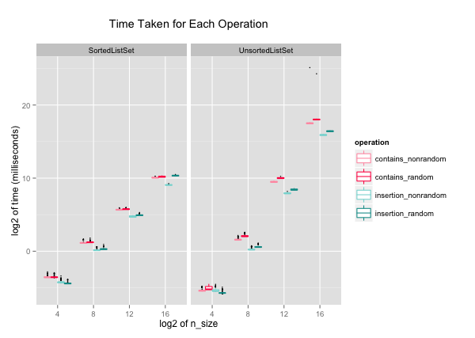

2016-02-29
Here, I implemented two different set algorithms in Python, sorted list and unsorted list. I also compared their performances for inserting and searching a value in a set. The link to my code on GitHub is here. This is the first part of 2-part series. In the next blog entry, I will write about balanced and unbalanced trees, and their performances.
The two algorithms I compared are sorted list and unsorted list. These are the steps I took for my project.
With a set algorithm, for each N = 2^5, 2^9, 2^13, 2^17:
1. Create a set S1, and time the following:
- a. Insert each even number in range(0, N) in order into a set S1.
- b. Check whether S1 contains each value in range(0, N).
2. Create a list of N random numbers, and a new set S2. Time the following:
- a. Insert the first N/2 random numbers into S2.
- b. Check whether S2 contains each random number.
In summary, I tested insertion and containment check for N sizes of 2^4, 2^8, 2^12, and 2^16, in incremental and random orders.
The code for unsorted list is simple. When the UnsortedListSet is initialized, it creates an empty list. For insertion and containment check, the algorithm checks one number at a time from the beginning of the list to the end. This is the code:
class UnsortedListSet(object):
def __init__(self):
self.values = []
def insert(self, value):
if not self.contains(value):
self.values.append(value)
def contains(self, value):
for x in self.values:
if x == value:
return True
return False
The big O of insertion and containment check for unsorted list are both O(n).
For sorted list, I used binary search algorithm for finding the index of the value when inserting and checking containment. The binary search algorithm returns the index of the value. Insertion inserts the value at the correct index, and containment check returns True or False depending on whether the value at the index matches the queuried number:
class SortedListSet(object):
def __init__(self):
self.values = []
def insert(self, value):
index = self.binary_search(value, self.values, 0, len(self.values))
# Index cannot be larger than the len(self.values)
if index == len(self.values) or value != self.values[index]:
# Use Python's built-in function, insert.
self.values.insert(index, value)
def contains(self, value):
index = self.binary_search(value, self.values, 0, len(self.values))
return index < len(self.values) and value == self.values[index]
def binary_search(self, value, l, start, end):
middle = (start + end)/2
# If this l is empty, 'start'
# and 'end' will be the same.
if end == start:
return middle
elif l[middle] == value:
return middle
# We don't need to consider middle anymore
# because we ruled it out above.
# So we recurse with middle +/- 1.
# Here, we go with middle + 1.
elif l[middle] < value:
return self.binary_search(value, l, middle + 1, end)
elif l[middle] > value:
return self.binary_search(value, l, start, middle)
Insertion with sorted list algorithm has O(n). This would be when the inserting needs to occur at the first of the list, and all the items in the list are scooted to the right. The big O of containment check is O(log2(n)) thanks to binary search.
I collected 100 data points of each set implementation. I used R and ggplot2 for visualizing the data.
